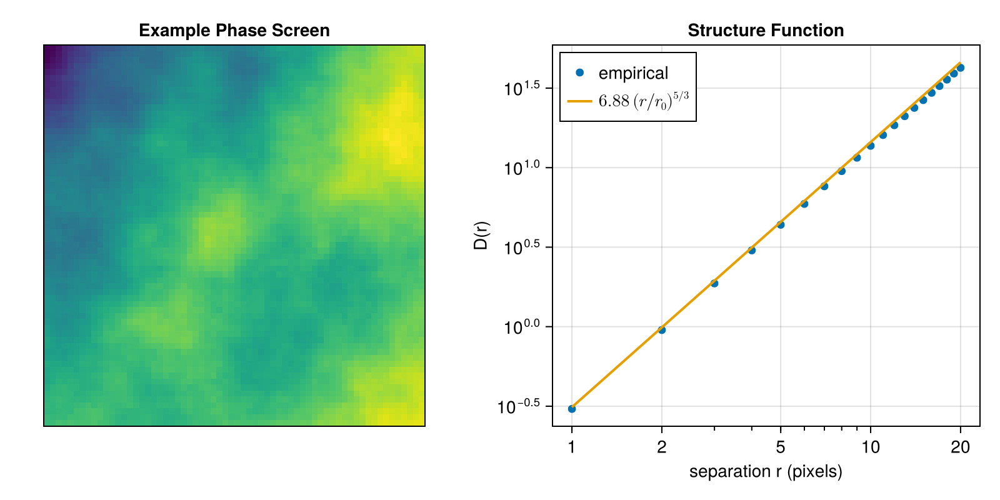
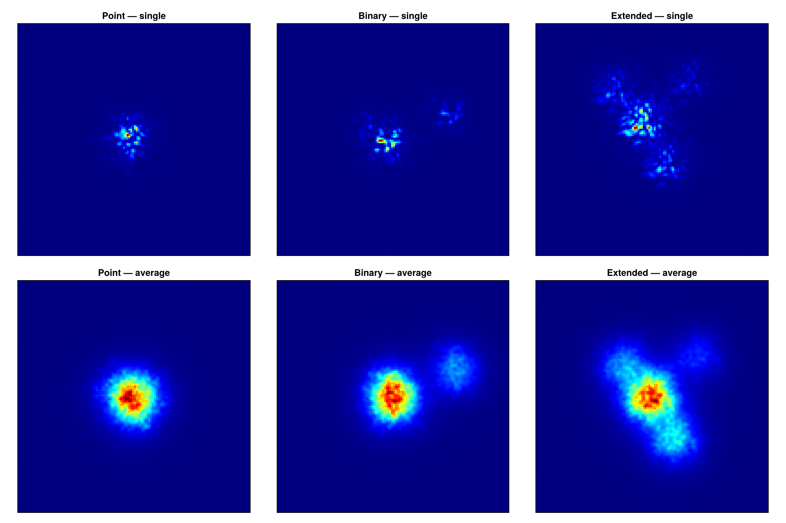
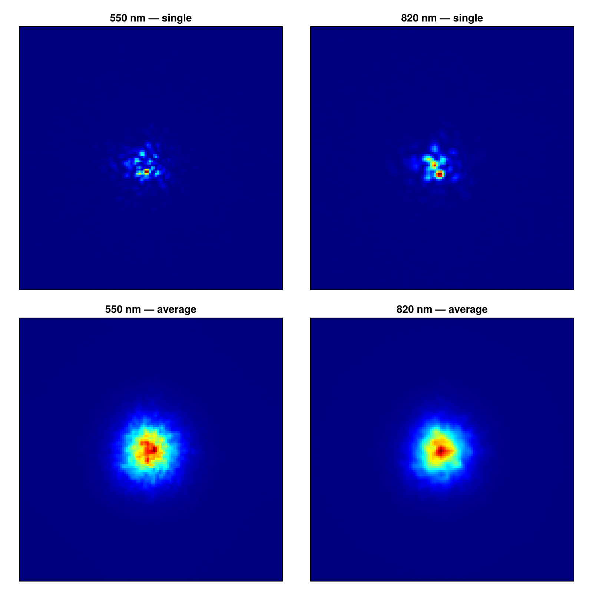
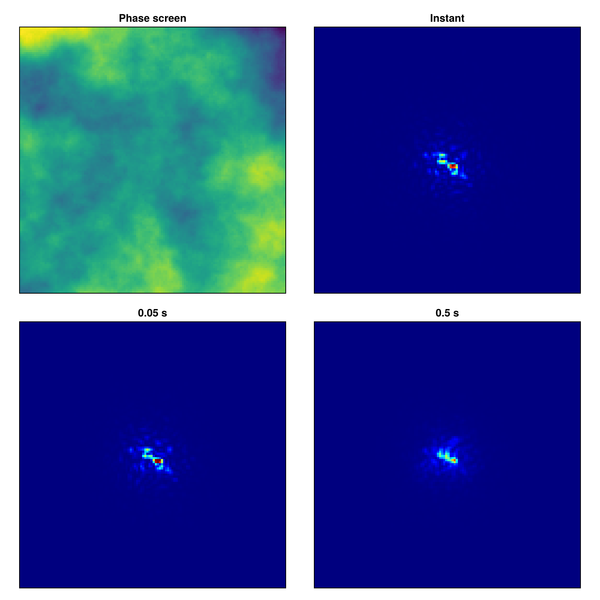

Examples
This page collects runnable examples for common simulation workflows. The examples use small grids and short sequences so they can run quickly in documentation builds; increase n, grid size, or batch size for production runs.
Phase Screen Generation
Create a SingleLayer atmosphere by specifying the Fried parameter $r_0$. Use simulate_phases to generate phase screens with the selected model; you will need to specify the grid size and the physical scale of the aperture.
For a 2 m window represented on a 64-pixel pupil grid with $r_0 = 0.2$ m:
using AtmosphericTurbulenceSimulator
atm = SingleLayer(0.2; interpolate=:auto) # r0 = 0.2 m
phases = simulate_phases(atm, (64, 64), 2; n=512) # d = 2 m apertureA useful sanity check is the phase structure function $D(r) = \langle |\phi(\mathbf{x} + \mathbf{r}) - \phi(\mathbf{x})|^2 \rangle$, which for Kolmogorov turbulence follows $D(r) = 6.88\,(r / r_0)^{5/3}$. We estimate it empirically by averaging the squared phase difference over all positions and frames for a range of pixel separations along one axis, then compare against the theoretical law:
using CairoMakie, Statistics
r0_px = 0.2 / (2 / 64) # r0 in pixels
seps = 1:20 # pixel separations to probe
emp = @views [mean(abs2, phases[s+1:end, :, :] .- phases[1:end-s, :, :]) for s in seps]
theory = 6.88 .* (seps ./ r0_px) .^ (5 / 3)
fig = Figure(size=(800, 400))
ax1 = Axis(fig[1, 1]; aspect=1, title="Example Phase Screen")
heatmap!(ax1, phases[:, :, 1]; colormap=:viridis)
hidedecorations!(ax1)
ax2 = Axis(fig[1, 2];
title="Structure Function",
xlabel="separation r (pixels)",
ylabel="D(r)",
xscale=log10,
yscale=log10,
xticks=[1, 2, 5, 10, 20],
xminorticks=1:10,
xminorticksvisible=true,
)
scatter!(ax2, seps, emp; label="empirical")
lines!(ax2, seps, theory; label=L"6.88\,(r/r_0)^{5/3}", linewidth=2, color=Cycled(2))
axislegend(ax2; position=:lt)
fig
To write phase screens to HDF5, pass a file name or HDF5File:
simulate_phases(atm, (64, 64); n=3000, file="phases.h5")True-Sky Models
An imaging simulation needs an aperture, photon budget, atmosphere, and true-sky model. The package ships three true-sky models:
- A point source — the default when no sky is passed to
simulate_images. The result is the atmospheric PSF itself. DoubleSystem— a primary plus a secondary source. The relative position is given in image pixels and the intensity is relative to the primary.TrueSkyImage— an arbitrary extended brightness distribution. The input image must match the final imaging grid size, not the aperture size.
using AtmosphericTurbulenceSimulator
using CairoMakie, Statistics
aperture = CircularAperture((64, 64))
img_spec = ImagingSpec(aperture, 2, PhotonCount(1e7, 200); filter=FilterSpec(550, bandwidth=40))
atm = SingleLayer(0.2; interpolate=:auto)
point_imgs = simulate_images(atm, img_spec; n=128).images
double_sky = DoubleSystem((35, 15), 0.3)
double_imgs = simulate_images(double_sky, atm, img_spec; n=128).images
sky_img = zeros(Float32, 128, 128) # matches the 128×128 imaging grid
sky_img[65, 65] = 1
sky_img[50, 83] = 0.30
sky_img[78, 42] = 0.42
sky_img[91, 88] = 0.18
extended_sky = TrueSkyImage(sky_img)
extended_imgs = simulate_images(extended_sky, atm, img_spec; n=128).imagesThe figure below shows a single frame (top row) and the average over all frames (bottom row) for each true-sky model. The point source recovers the long-exposure PSF, while the extended sources are each convolved with that same PSF:
img_avg(imgs) = dropdims(mean(imgs, dims=3), dims=3)
heatmap_kws(title) = (; colormap=:jet, axis=(; aspect=DataAspect(), title=title,
xticks=Int[], yticks=Int[]))
fig = Figure(size=(1200, 800))
for (col, (imgs, label)) in enumerate(zip(
(point_imgs, double_imgs, extended_imgs),
("Point", "Binary", "Extended"),
))
heatmap(fig[1, col], imgs[:, :, 1]; heatmap_kws("$label — single")...)
heatmap(fig[2, col], img_avg(imgs); heatmap_kws("$label — average")...)
end
fig
Multi-wavelength Imaging
Atmospheric phase screens are wavelength-dependent: the same wavefront distortion produces a phase shift $\phi \propto 1/\lambda$, so turbulence is stronger (in radians) at shorter wavelengths. In the same way, $r_0$ is wavelength-dependent, scaling as $r_0 \propto \lambda^{6/5}$. The simulation accounts for this automatically by fixing the base_wavelength for $r_0$ in the atmosphere spec and then scaling the turbulence strength according to the wavelengths in FilterSpec.
To image the same physical wavefront in two bands you must use SavedPhases — the phases are generated once at the reference wavelength and then replayed with a different filter. Running two independent SingleLayer simulations would draw uncorrelated phase screens and lose the physical relationship between the bands.
using AtmosphericTurbulenceSimulator
using CairoMakie, Statistics
aperture = CircularAperture((64, 64), 30)
atm = SingleLayer(0.2m; interpolate=:auto)
# Two narrow-band filters centred at 550 nm and 820 nm
filter_vis = FilterSpec(550nm; bandwidth=40nm)
filter_nir = FilterSpec(820nm; bandwidth=40nm)
img_spec_vis = ImagingSpec(aperture, 2m, PhotonCount(1e7, 200); filter=filter_vis)
img_spec_nir = ImagingSpec(aperture, 2m, PhotonCount(1e7, 200); filter=filter_nir)
phases, imgs_vis = simulate_images(atm, img_spec_vis; n=128)
imgs_nir = simulate_images(SavedPhases(phases), img_spec_nir; n=128).imagesThe NIR PSF is slightly narrower (the seeing scales as $\lambda / r_0 \propto \lambda^{-1/5}$), but the speckles themselves are much bigger, because their size scales as $\lambda / D$. The simulation handles the wavelength scaling automatically.
img_avg(imgs) = dropdims(mean(imgs, dims=3), dims=3)
heatmap_kws(title) = (; colormap=:jet,
axis=(; aspect=DataAspect(), title=title, xticks=Int[], yticks=Int[]))
fig = Figure(size=(800, 800))
heatmap(fig[1, 1], imgs_vis[:, :, 1]; heatmap_kws("550 nm — single")...)
heatmap(fig[1, 2], imgs_nir[:, :, 1]; heatmap_kws("820 nm — single")...)
heatmap(fig[2, 1], img_avg(imgs_vis); heatmap_kws("550 nm — average")...)
heatmap(fig[2, 2], img_avg(imgs_nir); heatmap_kws("820 nm — average")...)
fig
The angular resolution of the final images is determined by $\delta \theta = \frac{\lambda_{base}}{2\alpha D}$, where $\alpha$ is the Nyquist oversampling factor (default 1, see ImagingSpec manual for details).
Variable exposure times
To simulate long exposures you need non-zero wind velocity on the atmosphere spec and non-zero exposure time on the ImagingSpec. Wind velocity is expressed in the same physical units as $r_0$ and grid_step per unit time.
In this example we combine a variable exposure with the SavedPhases atmosphere spec, which replays a sequence of phase screens from an array. First, generate a large phase screen with padding so that the wind shift fits inside it:
using AtmosphericTurbulenceSimulator, CairoMakie
# r0 = 0.2 m, aperture d = 2 m represented on 64 pixels → r0 in same units as d
atm = SingleLayer(0.2m, interpolate=:auto)
phases = simulate_phases(atm, (128, 128); n=1, grid_step=2m/64)Then run several simulations with increasing exposure time using the same saved phase screen. The screen is automatically cropped to the 64-pixel aperture grid and shifted by $v \times t_\text{exp}$ in physical units, converted to pixels via d:
atm_saved = SavedPhases(phases; wind_velocity=(4m/s, 4m/s)) # 5.5 m/s on a 64-px/2-m grid
ap = CircularAperture((64, 64), 31)
img_spec_base = ImagingSpec(ap, 2m, PhotonCount(Inf))
img_shrt = simulate_images(atm_saved, img_spec_base; n=1).images[:, :, 1]
img_medi = simulate_images(atm_saved, # vt = 5.5 m/s × 0.05 s = 0.275 m shift
ImagingSpec(ap, 2m, PhotonCount(Inf); exposure=Exposure(0.05s, 10)); n=1).images[:, :, 1]
img_long = simulate_images(atm_saved, # vt = 5.5 m/s × 0.5 s = 2.75 m shift
ImagingSpec(ap, 2m, PhotonCount(Inf); exposure=Exposure(0.5s, 10)); n=1).images[:, :, 1]
heatmap_kws(title) = (;colormap=:jet, colorrange=(0, maximum(img_shrt)),
axis=(;aspect=DataAspect(), title=title, xticks=Int[], yticks=Int[]))
fig = Figure(size=(800, 800))
heatmap(fig[1, 1], phases[:, :, 1]; heatmap_kws("Phase screen")...,
colormap=:viridis, colorrange=Makie.automatic)
heatmap(fig[1, 2], img_shrt; heatmap_kws("Instant")...)
heatmap(fig[2, 1], img_medi; heatmap_kws("0.05 s")...)
heatmap(fig[2, 2], img_long; heatmap_kws("0.5 s")...)
fig
HDF5 Output
For large runs, write directly to HDF5 instead of holding all frames in memory:
using AtmosphericTurbulenceSimulator
using HDF5
aperture = CircularAperture((64, 64), 30)
img_spec = ImagingSpec(aperture, 2, PhotonCount(1e7, 200))
atm1 = SingleLayer(0.1; interpolate=:auto)
atm2 = SingleLayer(0.4; interpolate=:auto)
simulate_images(atm1, img_spec; n=16, file=HDF5File("images.h5", "bad_seeing"))
simulate_images(atm2, img_spec; n=16, file=HDF5File("images.h5", "good_seeing"))
h5open("images.h5", "r") do h5 # display the file structure
show(stdout, "text/plain", h5)
end🗂️ HDF5.File: (read-only) images.h5
├─ 📂 bad_seeing
│ ├─ 🔢 images
│ └─ 🔢 phases
└─ 📂 good_seeing
├─ 🔢 images
└─ 🔢 phasesWe wrote two simulation runs to the same file under different groups. Each group contains two datasets:
"images": simulated images with shape(Nx, Ny, n)."phases": phase screens with shape(Px, Py, n), whensavephases=true.
Set savephases=false to reduce disk use when only images are needed.